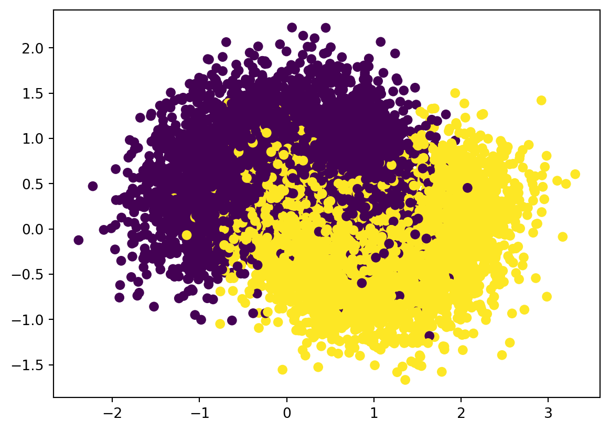

One approach to get many estimators is to use the same training algorithm for every predictor and train them on different random subsets of the training set. When sampling is performed with replacement, this method is called bagging (short for bootstrap aggregating). When sampling is performed without replacement, it is called pasting.
Consider the following example. The dataset is the one we used in Chpater 3: make_moon. We split the dataset into training and test sets.
from sklearn.datasets import make_moonsimport matplotlib.pyplot as pltfrom sklearn.model_selection import train_test_splitX, y = make_moons(n_samples=10000, noise=0.4, random_state=42)plt.scatter(x=X[:, 0], y=X[:, 1], c=y)X_train, X_test, y_train, y_test = train_test_split(X, y, test_size=0.15)

We would like to sample from the dataset to get some smaller minisets. We will use sklearn.model_selection.ShuffleSplit to perform the action.
The output of ShuffleSplit is a generator. To get the index out of it we need a for loop. You may check out the following code.
Note that ShuffleSplit is originally used to shuffle data into training and test sets. We would only use the shuffle function out of it, so we will set test_size to be 1 and use _ later in the for loop since we won’t use that part of the information.
What we finally get is a generator rs that produces indexes of subsets of X_train and y_train.
from sklearn.model_selection import ShuffleSplitn_trees =1000n_instances =100rs = ShuffleSplit(n_splits=n_trees, test_size=1, train_size=n_instances).split(X_train)
sklearn provides BaggingClassifier to directly perform bagging or pasting. The code is as follows.
In the above code, bag_clf is a bagging classifier, made of 500 DecisionTreeClassifers, and is trained over subsets of size 1.0. The option bootstrap=True means that it is bagging. If you would like to use pasting, the option is bootstrap=False.
This bag_clf also has .fit() and .predict() methods. It is used the same as our previous classifiers. Let us try the make_moon dataset.
The original bagging algoithm requires the “subset” has the same number of datapoints as the original set. Since duplicates are allowed, we are expected to use 63% of the data from the original dataset.
Click to expand for more details.
Let the original dataset have \(N\) elements. The probability to pick any specific data is \(1/N\), and therefore the probability not to pick it is \(1-1/N\). If we pick \(N\) elements with replacement, the probability that we never pick a specific element is \[
(1-\frac1N)^N\rightarrow \mathrm e^{-1},\quad \text{when }N\rightarrow\infty.
\] Therefore when \(N\) is large, the probability for each element not to be picked is approximately \(\mathrm e^{-1}\), and then the probability for it to be picked is approximately \(1-\mathrm e^{-1}\).
Let \(I_i\) be the random variable representing whether the element \(i\) is picked or not. So \[
I_i=\begin{cases}1&i \text{ is picked}\\
0&i\text{ is not picked}\end{cases}.
\] So \[
P(I_i=1)=1-\mathrm e^{-1},\quad P(I_i=0)=\mathrm e^{-1},\quad \text{ and }E[I_i]=1\cdot(1-\mathrm e^{-1})+0\cdot(\mathrm e^{-1})=1-\mathrm e^{-1}.
\] The expectation of the final sample size proportion is \[
E[\frac1N\sum_{i=1}^NI_i]=\frac1N\sum_{i=1}^IE[I_i]=1-\mathrm e^{-1}\approx 0.63.
\]
With similar calculation, if we pick \(\alpha N\) data, the expectation of the final sample size proportion is \(1-\mathrm e^{-\alpha}\).
OOB score
When we use bagging, it is possible that some of the training data are not used. In this case, we could record which data are not used, and just use them as the test set, instead of providing extra data for test. The data that are not used is called out-of-bag instances, or oob for short. The accuracy over the oob data is called the oob score.
We could set oob_score=True to enable the function when creating a BaggingClassifier, and use .oob_score_ to get the oob score after training.
When the classifiers used in a bagging classifier are all Decision Trees, the bagging classifier is called a random forest. sklearn provide RandomForestClassifier class. It is almost the same as BaggingClassifier + DecisionTreeClassifer.
When we use the Decision Tree as our base estimators, the class RandomForestClassifier provides more control over growing the random forest, with a certain optimizations. If you would like to use other estimators, then BaggingClassifier should be used.
Extra-trees
When growing a Decision Tree, our method is to search through all possible ways to find the best split point that get the lowest Gini impurity. Anohter method is to use a random split. Of course a random tree performs much worse, but if we use it to form a random forest, the voting system can help to increase the accuracy. On the other hand, random split is much faster than a regular Decision Tree.
This type of forest is called Extremely Randomized Trees, or Extra-Trees for short. We could modify the above random forest classifier code to implement the extra-tree algorithm. The key point is that we don’t apply the Decision Tree algorithm to X_subset. Instead we perform a random split.
n_trees =500n_instances =20rs = ShuffleSplit(n_splits=n_trees, test_size=1, train_size=n_instances).split(X_train)y_pred_list =list()acc_list =list()for mini_train_index, _ in rs: X_subset = X_train[mini_train_index] y_subset = y_train[mini_train_index] clf_ind = DecisionTreeClassifier(max_depth=1)# random split i = np.random.randint(0, X_subset.shape[0]) j = np.random.randint(0, X_subset.shape[1]) split_threshold = X_subset[i, j] lsetindex = np.where(X_subset[:, j]<split_threshold)[0]iflen(lsetindex) ==0: rsetindex = np.where(X_subset[:, j]>=split_threshold) rmode, _ = mode(y_subset[rsetindex], keepdims=True) rmode = rmode[0] lmode =1- rmodeelse: lmode, _ = mode(y_subset[lsetindex], keepdims=True) lmode = lmode[0] rmode =1- lmode y_pred = np.where(X_test[:, j] < split_threshold, lmode, rmode).reshape(-1)# The above code is used to use the random split to classify the data points y_pred_list.append(y_pred) acc_list.append(accuracy_score(y_pred, y_test))print('The mean of individual accuracy: {}'.format(np.mean(acc_list)))voting = np.array(y_pred_list)y_pred_mode, _ = mode(voting, axis=0, keepdims=False)print('The accuracy of the bagging classifier: {}'.format(accuracy_score(y_pred_mode, y_test)))
The mean of individual accuracy: 0.6386866666666667
The accuracy of the bagging classifier: 0.8293333333333334
From the above example, you may find a significant increase in the performace from the mean individual accuracy to the Extra-tree classifier accuracy. The accuracy of the Extra-tree classifier is also very close to what we get from the original data points, although its base classifier is much simpler.
In sklearn there is an ExtraTreesClassifier to create such a classifier. It is hard to say which random forest is better beforehand. What we can do is to test and calculate the cross-validation scores (with grid search for hyperparameters tuning).
In the above example, RandomForestClassifier and ExtraTreesClassifier get similar accuracy. However from the code below, you will see that in this example ExtraTreesClassifier is much faster than RandomForestClassifier.
Random Frorest: 5.580726623535156
Extremely Randomized Trees: 1.6635961532592773
Gini importance
After training a Decision Tree, we could look at each node. Each split is against a feature, which decrease the Gini impurity the most. In other words, we could say that the feature is the most important during the split.
Using the average Gini impurity decreased as a metric, we could measure the importance of each feature. This is called Gini importance. If the feature is useful, it tends to split mixed labeled nodes into pure single class nodes.
In the case of random forest, since there are many trees, we might compute the weighted average of the Gini importance across all trees. The weight depends on how many times the feature is used in a specific node.
Using RandomForestClassifier, we can directly get access to the Gini importance of each feature by .feature_importance_. Please see the following example.
In this example, you may see that the two features are relavely equally important, where the second feature is slightly more important since on average it decrease the Gini impurity a little bit more.